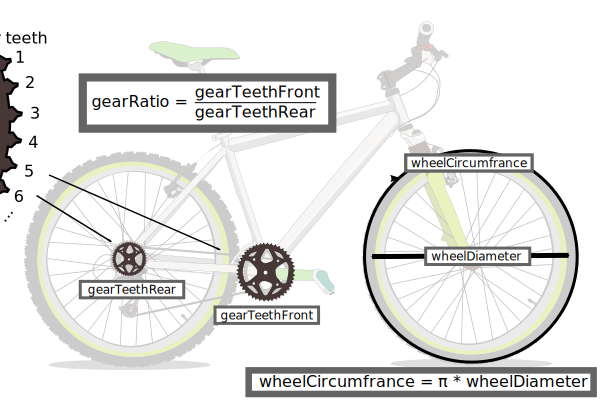

Java is an object-oriented language. This means everything is done using individual entities we call objects. Every object is made from a template called a class. A class may specify the information the objects can store (feilds), how the objects will be created (constructor), and the functions available to the objects (methods).

Let's say we want to make simple bicycles. First we need to make a class describing basic bicycles. We may want to store information such as the wheel diameter, tooth count of the front and rear gears, cadence (pedal revolutions per second) and speed. We can do this by storing this information in variables we call fields.
Specifying a field always includes the type as well as a reference name for the information. The type of information can be a class or one of the simple types called primatives. For now we'll just use floating-point numbers (double). The reference names can be used to find and change the field values.
class Bicycle {
// Feilds - store information
double wheelCircumfrance; // in meters
double gearRatio; // front/rear
double candence = 0; // pedal rhythm - revolutions per second
double speed = 0; // in meters per second
}
The words wheelCircumfrance, gearRatio, candence and speed can be used to reference their field values. Notice that some of the fields were initialized because their values are known. In this case bicycles will start with both a candence and speed of 0.
You may have noticed that some of the fields weren't initiaized. It is the constructor's job to set up the objects by asking for variables called parameters. In this case the constructor's parameters can be the wheel diameter and sprocket counts.
class Bicycle {
// Feilds - store information
double wheelCircumfrance; // in meters
double gearRatio; // front/rear
double candence = 0; // pedal rhythm - revolutions per second
double speed = 0; // in meters per second
// Constructor - how to create objects
Bicycle(double wheelDiameter, int gearTeethFront, int gearTeethRear) {
wheelCircumfrance = Math.PI * wheelDiameter; // Math.PI == π
gearRatio = gearTeethFront / gearTeethRear;
}
}

*Note - the names used here are simplified for the purposes of this lesson. You can learn more about bicycle gearing here.
So far have a way to construct bicycles and store their information. Now we need methods to define what they can do and how other objects can interact with them. We will probable want to change our candence (or pedaling rhythm), update the speed and get the speed.
class Bicycle {
// Feilds - store information
double wheelCircumfrance; // in meters
double gearRatio; // front/rear
double candence = 0; // pedal rhythm - revolutions per second
double speed = 0; // in meters per second
// Constructor - how to create objects
Bicycle(double wheelDiameter, int gearTeethFront, int gearTeethRear) {
wheelCircumfrance = Math.PI * wheelDiameter; // Math.PI == π
gearRatio = gearTeethFront / gearTeethRear;
}
// Methods - interact with objects
void setCandence(double candence){
this.candence = candence;
updateSpeed();
}
void updateSpeed(){
speed = candence * gearRatio * wheelCircumfrance;
}
double getSpeed(){
return speed;
}
}
Notice that methods look very similar to constructors. One difference is that methods have a reference name that can be used to call the method. Methods may have any return type while constructors have the same type as the class.
Some of the bicycle's methods have something to return. return breaks out of the method and returns either an object, primative or nothing. The type of the returning value must be declared before the method name. If there is no return value, void must be declared.
Now that we have a basic bicycle class, let's see how it can be used by other classes. To create a new bicycle object, use the constructor with the appropriate parameters. Let's make a bicycle with a wheel height of 0.665 meters and a gear ratio of 39/14
ՈՒշադրություն դարձրեկ հեծանիվի շինարարը(constructor) որ պետկ է սարքի թիվ հատկորոշել։ Ասենք թե մեր հեծանիվի սարքը պետկ է շարժի հեծանիվը 5.8 մետեր ամէն ոտնակ պտույտ։ ՈՒրիշ օբյեկտները կարողեն ստեղծվել այս հեծանիվ այսպես։
Bicycle myBicycle = new Bicycle(0.665, 39, 14);
Հեծանիվ իմՀեծանիվս = new Հեծանիվ(0.665, 39, 14);
This creates a new bicycle called myBicycle which currently has a candence and speed of 0. In order to start riding it, we can change the candence as such:
Bicycle myBicycle = new Bicycle(0.665, 39, 14); myBicycle.setCandence(1.3);
Հեծանիվ իմՀեծանիվս = new Հեծանիվ(0.665, 39, 14); իմՀեծանիվս.փոխիՌիթմը(1.3);
In order to check the speed, we can use the getSpeed() method which return the speed field. One common way Java programmers visualize such information is with the System.out.println() method which prints to a console for you to see.
Bicycle myBicycle = new Bicycle(0.665, 39, 14);
System.out.println("before: " + myBicycle.getSpeed());
myBicycle.setCandence(1.3);
System.out.println("after: " + myBicycle.getSpeed());
Հեծանիվ իմՀեծանիվս = new Հեծանիվ(5.8); System.out.println(իմՀեծանիվս.ինչէԱրագությունը()); իմՀեծանիվս.փոխիՌիթմը(1.3); System.out.println(իմՀեծանիվս.ինչէԱրագությունը());
The above code would display the following on your console.
before: 0 after: 7.565740508